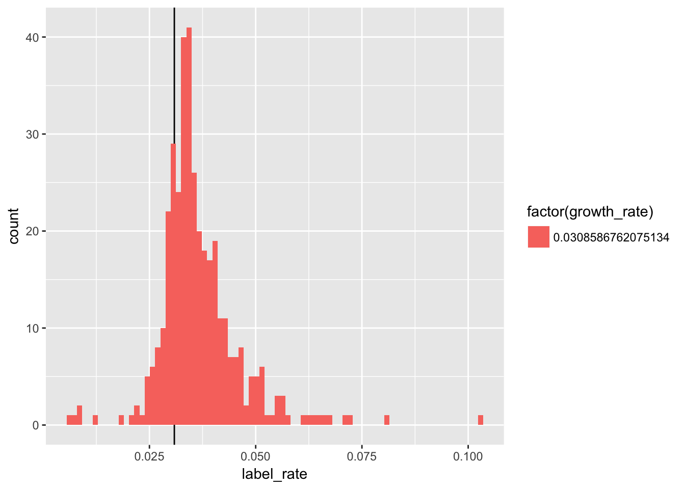
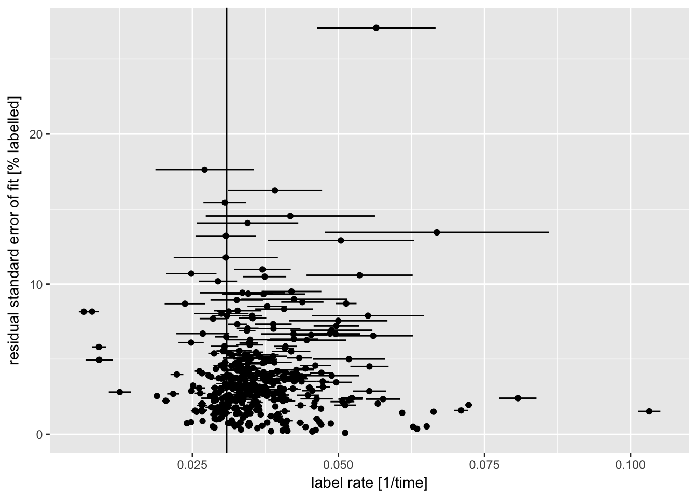
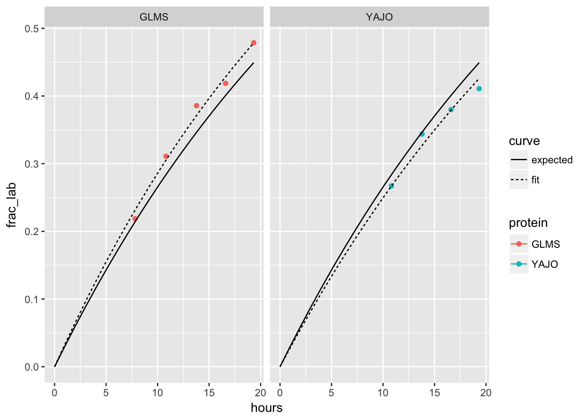

library(readxl)
library(readr)
library(dplyr)
library(plotly)
library(purrr)
devtools::load_all(".")With the original goal of quantifying protein turnover and protein degradation for as many proteins as possible in a proteome, the turnoveR package has been developed to analyse isotopically labeled proteomics datasets.
Experimental datasets intended for use with this package are generated from a series of samples taken from a steady-state bacterial culture. Samples are taken at different timepoints following an isotopic label “pulse”.
Functions in the turnoveR package accept mass spectrometry datasets that have been pre-processed to estimate areas of the “heavy” and “light” isotopic labeled fractions for each protein (by programs such as Massacre).
General data processing functions
tor_read_svm_data_file - Read SVM data file
tor_rename_proteins - Rename proteins based on protein mapping file
tor_filter_peptides_by_spectral_fit - Process the SVM data
svm_data <- tor_read_svm_data_file(file.path("vignette_data", "svm_pred_results_0.03gr.csv"))
metadata <- read_excel(file.path("vignette_data", "metadata_CMW.xlsx"))
psms <- read_csv(file.path("vignette_data", "psms.csv"))
prot_rename_filepath <- file.path("vignette_data", "rename_prot.xlsx")svm_data_filtered <-
svm_data %>%
tor_rename_proteins(prot_rename_filepath) %>%
tor_filter_peptides_by_spectral_fit(pred_cutoff = 0.75) %>%
tor_calculate_labeled_fraction() %>%
# adjust names
select(unishort = uniShort, protein = prot, gene, isopep = seqz, sample, frac_ulab, frac_lab) %>%
# add timepoints from metadata
left_join(metadata, by = "sample")## Info: renamed 5 protein entries for 1 different proteins.## Info: kept 6961 of 27220 (25.6%) peptide measurements#Important: need vessel volume and flow rate for growth_rate calculation
growth_rate = 0.46*60 /894.4
generation_time = log(2) / growth_rate
final_data <- tor_calculate_label_rate(svm_data_filtered, quiet = FALSE) %>%
#filter out data with bad fits, or not enough data points
filter(enough_data, !fit_error) %>%
select(-enough_data, -fit_error) %>%
tor_calculate_degradation_dissipation(growth_rate) ## Info: Processing data for 421 proteins...this may take a few seconds## 421 of the proteins could be fit to a labeling curve. #add psms information to create weighted calculations
final_table <- final_data %>%
left_join(psms, by = "protein") %>%
mutate(
relative_abundance = (T0_counts / sum(T0_counts, na.rm = TRUE)),
weighted_deg = deg_rate * relative_abundance,
weighted_disp = dissipation * relative_abundance
) %>%
#rename columns - need to make sure column names are consistent
rename(protein_count = T0_counts) %>%
select(-nested_data, -fit)#sum turnover rate for experiment
sum_dissipation = sum(final_table$weighted_disp, na.rm = TRUE)
sum_dissipation## [1] 9.657343#list top proteins by label rate
label_top50 = top_n(final_table, n = 50, wt = final_table$label_rate)
label_top50## # A tibble: 50 x 18
## protein gene num_isopep label_rate label_rate_se fit_rse
## <chr> <chr> <int> <dbl> <dbl> <dbl>
## 1 ACEA aceA 25 0.0518 0.000354 0.0226
## 2 ACON2 acnB 18 0.0513 0.00177 0.0871
## 3 ACSA acs 29 0.0470 0.000233 0.0170
## 4 AHPC ahpC 7 0.0663 0.000560 0.0150
## 5 ALDB aldB 16 0.0459 0.000372 0.0209
## 6 ASSY argG 1 0.0668 0.0192 0.134
## 7 CSPC cspC 2 0.0710 0.00122 0.0159
## 8 DACC dacC 2 0.0496 0.00388 0.0721
## 9 DBHB hupB 2 0.0467 0.000369 0.00814
## 10 DSBA dsbA 2 0.0488 0.00701 0.0693
## # ... with 40 more rows, and 12 more variables: num_timepoints <int>,
## # num_datapoints <int>, deg_rate <dbl>, deg_rate_se <dbl>,
## # dissipation <dbl>, dissipation_se <dbl>, growth_rate <dbl>,
## # growth_rate_se <dbl>, protein_count <int>, relative_abundance <dbl>,
## # weighted_deg <dbl>, weighted_disp <dbl>#list top proteins by relative abundance
relative_abundance_top50 = top_n(final_table, n = 50, wt = final_table$relative_abundance)
relative_abundance_top50## # A tibble: 50 x 18
## protein gene num_isopep label_rate label_rate_se fit_rse
## <chr> <chr> <int> <dbl> <dbl> <dbl>
## 1 ACEA aceA 25 0.0518 0.000354 0.0226
## 2 ACON2 acnB 18 0.0513 0.00177 0.0871
## 3 ACSA acs 29 0.0470 0.000233 0.0170
## 4 ADHE adhE 24 0.0325 0.000457 0.0373
## 5 ALDA aldA 22 0.0398 0.000369 0.0272
## 6 ALDB aldB 16 0.0459 0.000372 0.0209
## 7 ARGT argT 13 0.0368 0.000474 0.0301
## 8 ATPA atpA 14 0.0333 0.000568 0.0380
## 9 ATPB atpD 18 0.0315 0.000466 0.0366
## 10 CH60 groL 23 0.0290 0.000487 0.0434
## # ... with 40 more rows, and 12 more variables: num_timepoints <int>,
## # num_datapoints <int>, deg_rate <dbl>, deg_rate_se <dbl>,
## # dissipation <dbl>, dissipation_se <dbl>, growth_rate <dbl>,
## # growth_rate_se <dbl>, protein_count <int>, relative_abundance <dbl>,
## # weighted_deg <dbl>, weighted_disp <dbl>#list top proteins by weighted degradation
weighted_degradation_top50 = top_n(final_table, n = 50, wt = final_table$weighted_deg)
weighted_degradation_top50## # A tibble: 50 x 18
## protein gene num_isopep label_rate label_rate_se fit_rse
## <chr> <chr> <int> <dbl> <dbl> <dbl>
## 1 ACEA aceA 25 0.0518 0.000354 0.0226
## 2 ACON2 acnB 18 0.0513 0.00177 0.0871
## 3 ACSA acs 29 0.0470 0.000233 0.0170
## 4 AHPC ahpC 7 0.0663 0.000560 0.0150
## 5 ALDA aldA 22 0.0398 0.000369 0.0272
## 6 ALDB aldB 16 0.0459 0.000372 0.0209
## 7 ARGT argT 13 0.0368 0.000474 0.0301
## 8 ASSY argG 1 0.0668 0.0192 0.134
## 9 CAPP ppc 4 0.0396 0.00144 0.0418
## 10 CISY gltA 13 0.0451 0.000631 0.0311
## # ... with 40 more rows, and 12 more variables: num_timepoints <int>,
## # num_datapoints <int>, deg_rate <dbl>, deg_rate_se <dbl>,
## # dissipation <dbl>, dissipation_se <dbl>, growth_rate <dbl>,
## # growth_rate_se <dbl>, protein_count <int>, relative_abundance <dbl>,
## # weighted_deg <dbl>, weighted_disp <dbl>tor_plot_label_rate_hist(final_data)
tor_plot_label_rate_error(final_data)
tor_plot_labeling_curves(final_data, plot_number = 2)